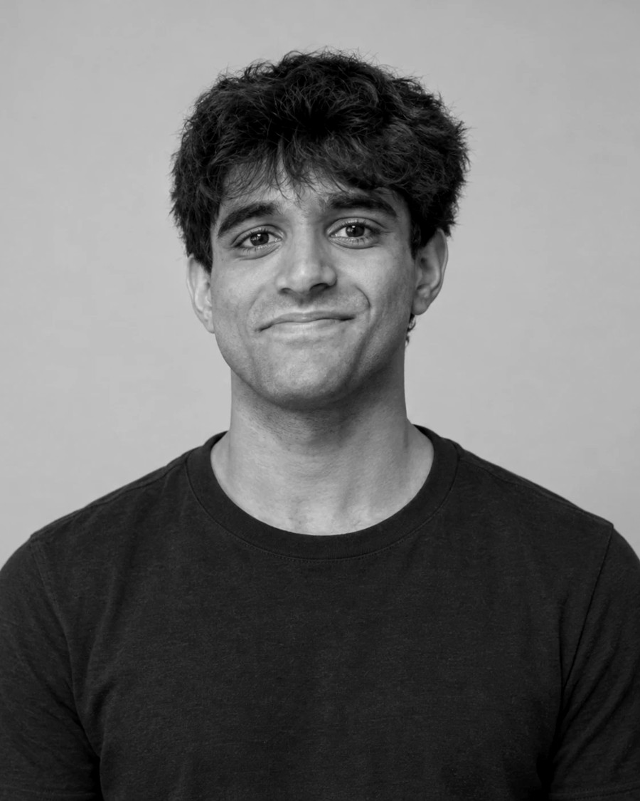

AI automation and custom software, from someone who priced jobs for a living first. Based in Manchester. Built with Claude.

I joined a UK construction contractor pricing jobs from drawings: over 650 estimates. I became the company's in-house developer, then replaced its ERP with a job system I specified, tested and rolled out in three weeks. The whole team uses it every day, from the office to site crews on tablets.
I bring the problem, the business rules and the testing; Claude writes most of the code. That's how I also ship AI workflows, Android apps, Roblox games and a 3D-print shop on the side.
A web app and an offline tablet app, connected to accounting and proposal software, with an AI assistant that logs everything it does. Over 1,100 automated tests run before every update. Everything shown here is an illustration with made-up data, not the real system.
Node, Gemma 4 for sight, character and judging, ElevenLabs for each object's voice and for transcribing you, live voting over QR. Built with Debanjan Ray and Hussain Afham.